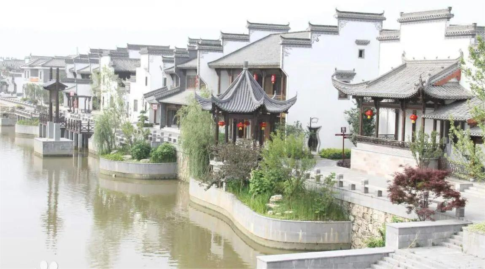
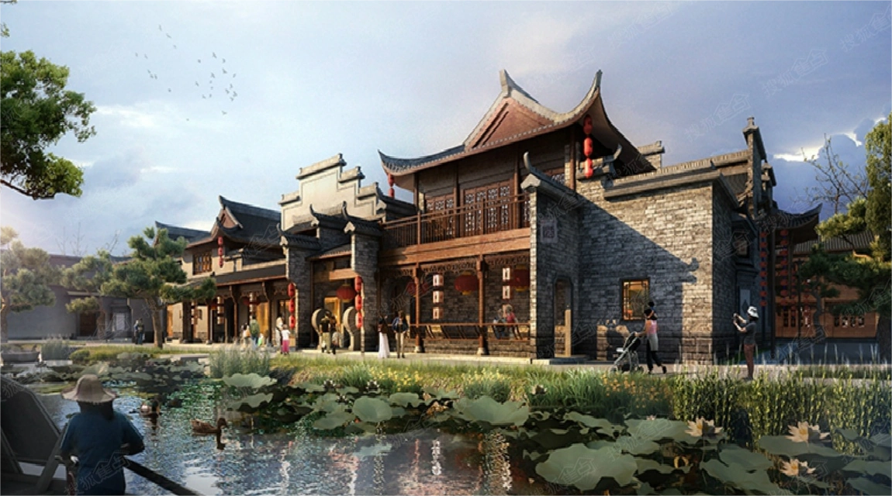
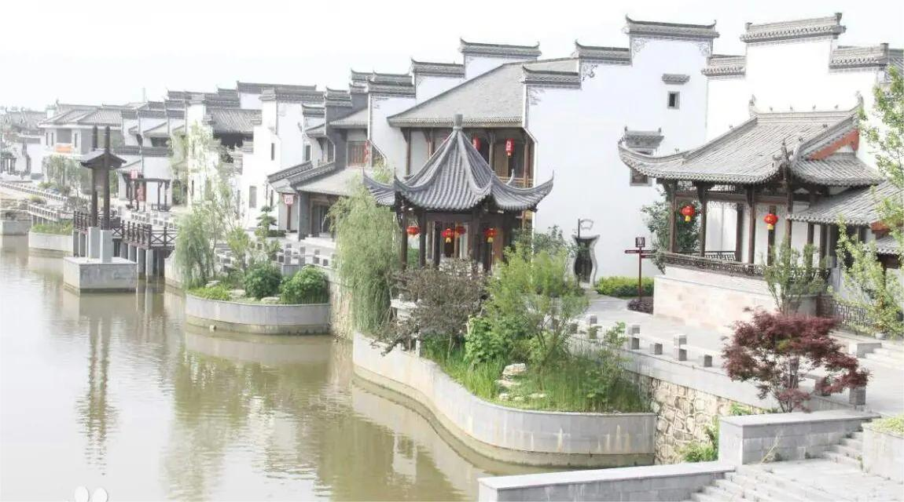
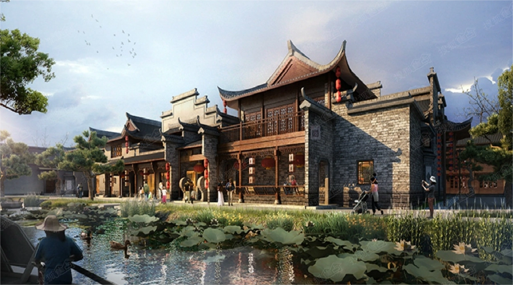

鸠兹古镇：徽文化的璀璨明珠
鸠兹古镇，位于安徽省芜湖市扁担河沿岸，是一座集历史、文化、旅游、休闲于一体的综合性景区。 这里不仅有丰富的历史底蕴，还有独特的建筑风格，以及深厚的徽商文化底蕴，成为了中国徽文化的重要展示窗口。
一、历史沿革
鸠兹古镇历史悠久，早在南宋时期就已形成草市，元代时更是发展为芜湖的重要商埠，即传说中的鸠兹老街。随着历史的演进，这里逐渐成为了徽商重要的“宜贾宜居”之地。数百年来，徽商在这里经营木材、茶叶、粮食等，使得鸠兹古镇繁华一域，成为芜湖城边重要的商业次中心。
二、建筑风格
鸠兹古镇的建筑风格独具特色，以徽派建筑为主，同时融合了江南水乡的建筑风格。 这里的建筑多以青砖黛瓦、马头墙、木雕花窗等元素为主，体现了徽派建筑的精细与典雅。 漫步在古镇的街头巷尾，仿佛穿越时光，回到了那个徽商云集、商贾云集的年代。
三、文化特色
鸠兹古镇的文化特色丰富多彩，其中最为突出的是徽商文化。 这里不仅有徽州会馆、潮州会馆等商帮会馆，还有俞宅、吴明熙大宅等名人故居，以及李漱兰堂、通德堂等传统业态的再现。 此外，古镇还设有多个非遗体验项目，如剪纸、刺绣、木雕等，让游客在欣赏美景的同时，也能深入了解和体验徽文化的魅力。
四、旅游体验
鸠兹古镇的旅游体验丰富多样，既有静态的参观游览，也有动态的互动体验。 游客可以在古镇内漫步，欣赏古色古香的建筑和美丽的风景，也可以去梨园堂、中江书院等地了解徽文化的历史和发展。 此外，古镇内还有多家特色小吃店和风情酒店，让游客在品尝美食的同时，也能感受到徽派建筑的独特韵味。 在夜晚，古镇更是别有一番风味。 沿扁担河两岸打造的梦幻临水区域，分布着充满休闲气息的茶吧、书吧、咖啡吧等，游客可以乘游船赏古镇，放河灯，体验水上古镇的乐趣。 同时，古镇内还有多场大型实景演出，如《徽商传奇》等，让游客在欣赏演出的同时，也能深入了解徽商文化的历史和发展。
总结
总之，鸠兹古镇是一座集历史、文化、旅游、休闲于一体的综合性景区，是了解徽文化、感受徽商文化的重要窗口。 无论是历史爱好者还是文化追求者，都能在这里找到属于自己的乐趣和收获。
电话：
邮箱：
手机：
地址：